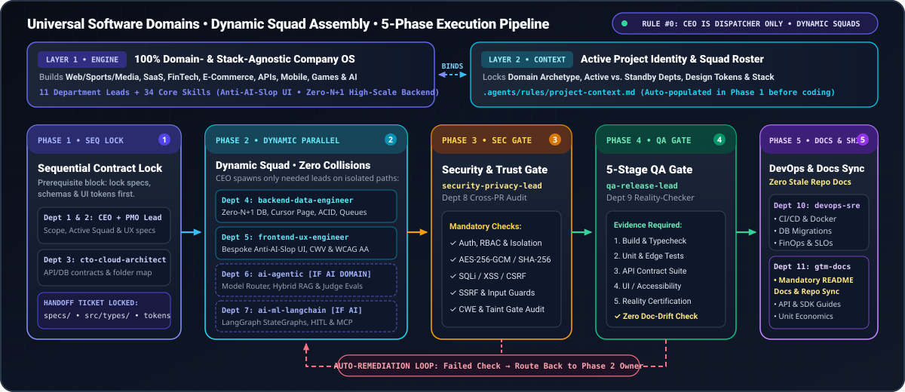

11
SUBAGENTS
Department Lead Agents
CEO, Product, CTO, Backend, Frontend, AI Router, LangGraph, Security, QA, DevOps & DevRel
Turn Claude Code, Cursor, Windsurf, Google Antigravity, OpenCode, GitHub Copilot & 10+ AI tools into One Cohesive 11-Department Engineering Team with zero prompt bloat and zero file collisions.
CEO, Product, CTO, Backend, Frontend, AI Router, LangGraph, Security, QA, DevOps & DevRel
Strictly scoped 2–4 skills per department — zero HR or non-coding prompt bloat
Contract Lock → Parallel Build → Security Gate → 5-Stage QA → DevOps & Docs
1-command installer via npx, macOS/Linux bash, or Windows PowerShell
AGENTS.md + .agents/)All 11 Department Lead Subagents and 34 Core Technical Skills are reusable across any programming language, framework, or cloud provider without modification.
.agents/rules/project-context.md)The only file that stores your repository's tech stack, PRD, security invariants, and non-overlapping folder ownership — auto-populated by your CEO & CTO agents on first run!
Select your preferred installation shell and click one or more AI coding tools below to generate the exact copy-paste installation command and preview every native file created in your project.
npx github:abdelrahman-elkot/universal-ai-software-company . --doctor
No manual configuration files to write by hand. Install the engine once, let the CEO and CTO agents inspect your repository, and start shipping features through the 5-Phase Pipeline.
Run the 1-command installer inside any new or existing repository (TypeScript, Python, Go, Rust, Next.js, FastAPI, Cloudflare Workers, etc.).
npx github:abdelrahman-elkot/universal-ai-software-company . --agent all
Open your AI coding tool and type this exact prompt. ceo-executive-orchestrator and cto-cloud-architect will inspect your repo and populate .agents/rules/project-context.md automatically.
Initialize project context
Describe any feature or milestone. Your AI assistant automatically routes each phase to the owning department leads and enforces Security & 5-Stage QA gates before completion.
Run the 5-Phase Company Pipeline to design, build, audit, and test [your feature].
Click any phase below to inspect its active Department Leads, input contracts, non-overlapping folder boundaries, quality gates, and handoff artifacts.

Select any Department Lead card on the left to inspect its mission, default owned codebase paths, assigned technical skills, and copyable starter prompts.
Search across all 34 production engineering skills (press / to focus) or filter by department category.